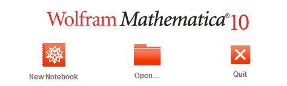
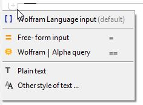

1.2 Oppsett og grunnleggende innstillinger
For å starte et nytt dokument, trykk på "New Notebook" ikonet i velkomstvinduet

Ved å trykke på pluss-tegnet kan du velge input-type. Merk at "Alpha query" og Free-form input er avhengig av internett-tilgang.

[] Wolfram Language input er standardvalget i Mathematica. Her kan kommandoer skrives over flere linjer, og man må holde inne shift samtidig som man trykker enter for å sende kommando. Her er det kritisk at kommandoene er riktig skrevet, kommandoene er "case-sensitive" og begynner som regel på stor bokstav.
Free-form input er lik Alpha query, men returnerer litt mindre detaljert resultat. I tilegg vises riktig Mathematica-syntaks der det er mulig, og er dermed en god måte å lære seg riktig syntaks på. Free-form input kan velges ved å skrive "=".
Alpha query er det samme som wolframalpha.com. Alpha-motoren er basert på kunstig inteligens og kan ofte forstå hva du ønsker å regne ut selv om syntaksen ikke er riktig. En hurtigere måte å velge Alpha query som input-type på er å skrive "==".